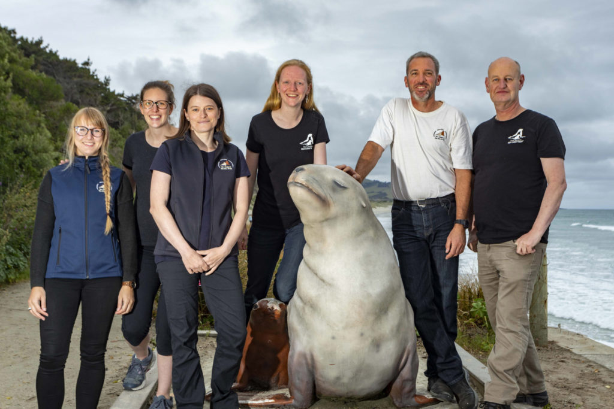

2021 Trustees, Hanna, Amelia, Jordana, Bryony, Shaun and John
Founded in 2003, the New Zealand Sea Lion Trust was established to provide protection to and education about this critically endangered marine mammal species.
We work with the Department of Conservation identifying and monitoring the local breeding population centered around the Otago and Southland coasts.
Education is an important part of our activities and we offer education programmes to schools and community groups as well as supporting scientific research.
Based in Dunedin, we are staffed and supported entirely by volunteers and are self funded by donations from our generous members and donors.